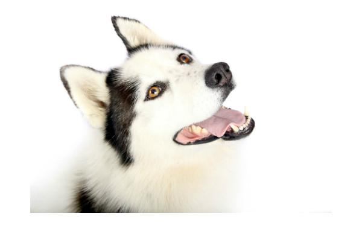

Invencible
Sin duda esta receta se convertirá en tu mayor aliado para protegerle a tu peludo de posibles enfermedades. Gracias a la tripa verde el plato preparado estará repleto de probióticos que pueden fortalecer su flora intestinal y por tanto su sistema inmunitario. Podrás disfrutar de verle sano, feliz y lleno de vitalidad.
Ingredientes
- 50% Carne de boca de ternera
- 15% Tripa verde ligera
- 10% Bazo de ternera
- 5% Sangre de ternera
- 20% Copos de verduras
- MCH Calcio a medida
- Aceite de pescado y onagra
Preparación
